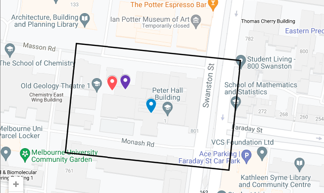
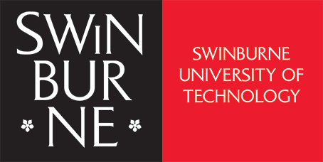

Guttmann 2025 - 80 and (still) counting
{kind=link}

From Monday 30 June to Wednesday 2 July, 2025 we will hold a conference in honour of Tony Guttmann on the occasion of his 80th birthday.
We will celebrate Tony's research contributions to statistical mechanics, combinatorics, and mathematical physics, as well as his leadership in the broader mathematical sciences community.
It will be hosted in hybrid face-to-face and online mode by the University of Melbourne, with a mixture of local and international participants from places including France, Germany, the UK, Canada, and the USA.
Registration is now open! Please visit the registration page to register.
The program page will contain details of the schedule closer to the date of the conference.
Tentative list of speakers:
- Tony Guttmann
- Murray Batchelor
- Rodney Baxter
- Vladimir Bazhanov
- Nick Beaton
- Mireille Bousquet-Mélou
- Yao-ban Chan
- Nathan Clisby
- Andrew Conway
- Jan de Gier
- Bertrand Duplantier
- Andrew Elvey Price
- Ian Enting
- Tim Garoni
- Jesper Jacobsen
- Iwan Jensen
- Jean-Marie Maillard
- Vladimir Mangazeev
- Paolo Massazza
- Barry McCoy
- Aleks Owczarek
- Jay Pantone
- Thomas Prellberg
- Andrew Rechnitzer
- Christoph Richard
- Alan Sokal
- Ole Warnaar
- Stuart Whittington
- Paul Zinn-Justin
Organisers
- Nick Beaton
- Nathan Clisby
- Tim Garoni
If you have any queries please contact Nathan Clisby at nclisby@swin.edu.au
Location
The conference venue is the Evan Williams Theatre, in the Peter Hall Building of the University of Melbourne. Visitors should access the Peter Hall Building via the western entrance as shown on the map below. The red marker shows the western entrance, and the purple marker shows the Evan Williams Theatre.
Sponsors
| School of Mathematics and Statistics, University of Melbourne | School of Mathematics, Monash University | |
|  | School of Science, Computing and Emerging Technologies, Swinburne University of Technology |
Bonus material

Source:
A.J. Guttmann and M.F. Sykes, Limiting ring closure probability index for the self
avoiding random walk problem, J. Phys. C : Solid
State Phys, 6: 945-954 (1973).